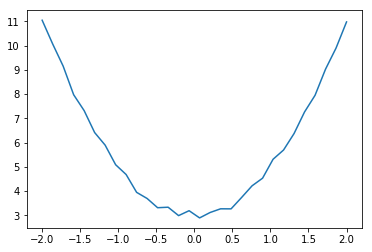

1. Introduction
This post belongs to a new series of posts related to a huge and popular topic in machine learning: fully connected neural networks.
The general series scope is three-fold:
- visualize the model features and characteristics with schematic pictures and charts
- learn to implement the model with different levels of abstraction, given by the framework used
- have some fun with one of the hottest topics right now!
In this new post, we are going to introduce the key components and modules of Pytorch, while we are going to use and apply to a neural network in the next one.
We are going through the following steps:
- Tensors, Pytorch core components
- Basic
torchfunctionalities for a linear problem Autogradpackage for a linear problemnnpackage for a linear problemoptimpackage for a linear problem
2. Installing and importing PyTorch
The fourth library we analyze in this series is PyTorch (PT from now on).
To install PT on your system, you can go to the official page and set your requirements.
In this case, a CPU-only installation on Windows from Anaconda looks like this:

conda install pytorch torchvision cpuonly -c pytorch
We import the main library torch, the nn module as tnn and the submodule nn.functional as F.
import numpy as np
%matplotlib inline
import matplotlib.pyplot as plt
import torch
import torch.nn as tnn
import torch.nn.functional as F
3. The key-component in Pytorch: tensors
A good starting point is, of course, the official docu.
As stated in this tutorial, torch.Tensor is the central class of the package.
A nice way to understand what tensors are is to figure out what an n-dimensional array looks like.
A 1D array is a list of numbers, a 2D array is a table of numbers, a 3D array is a box of numbers, and so on.
They are conceptually identical to an n-dimensional Numpy array, with many functions and operations that can be performed on these tensors. Any computation that can be performed with Numpy can also be accomplished with PyTorch tensors.
So why create a new library for scientific computing instead of using Numpy?
To make it faster!
They have been indeed introduced in Tensorflow and Pytorch to overcome one shortcoming of Numpy: it cannot utilize GPUs to accelerate its numerical computations.
To use GPUs, it is just enough to specify the device=torch.device('cuda') attribute when constructing a tensor to place it on a GPU.
Otherwise, device=torch.device('cpu') can do the job if the model can run smoothly on a CPU only.
A tensor can be created directly from a Python list using the same torch.tensor() constructor.
To convert it back to Numpy, we can use the numpy() method.
However, please make sure you pay attention to the float() option that is used in the third case in order to return a Float32 array instead of a Long=Float64.
That could cause issues afterwards if tensors’ type is not consistent with each other.
This discussion raises the problem and helps to understand it.
xn = np.array([[1, 2, 3], [4, 5, 6]]).astype(float)
xt = torch.tensor(xn)
descrs = ['Numpy array', 'Torch tensor', 'Tensor converted to float array',\
'Tensor converted to array', 'Tensor single element converted to scalar']
for descr, obj in zip(descrs, [xn, xt, xt.float().numpy(), xt.numpy(), xt[-1,-1].item()]):
print("{}:\n{}\n".format(descr, obj))
Numpy array:
[[1. 2. 3.]
[4. 5. 6.]]
Torch tensor:
tensor([[1., 2., 3.],
[4., 5., 6.]], dtype=torch.float64)
Tensor converted to float array:
[[1. 2. 3.]
[4. 5. 6.]]
Tensor converted to array:
[[1. 2. 3.]
[4. 5. 6.]]
Tensor single element converted to scalar:
6.0
However, if the tensor requires the gradient to be computed, we cannot move it to Numpy, without breaking the graph. If we do not need the gradients, we can explicitly detach the tensor from the graph to get a tensor with the same data content that does not need the gradient functionality anymore. The latter tensor can be thus converted to a Numpy array.
xt_ = torch.tensor(xn, requires_grad=True)
xt_.detach().numpy()
descrs = ['Torch tensor with requires_grad', 'Tensor converted to float array']
for descr, obj in zip(descrs, [xt_, xt_.detach().numpy()]):
print("{}:\n{}\n".format(descr, obj))
Torch tensor with requires_grad:
tensor([[1., 2., 3.],
[4., 5., 6.]], dtype=torch.float64, requires_grad=True)
Tensor converted to float array:
[[1. 2. 3.]
[4. 5. 6.]]
The Variable constructor has been deprecated since Pytorch 0.4.0.
Variables are no longer necessary to perform gradient computation on tensors with autograd().
Instead of converting tensors to trainable tensors with the Variable constructor and feeding them to the model, we use the tensor constructor directly with the attribute requires_grad set to True.
Autograd automatically supports such Tensors.
4. Basic torch functionalities for a linear problem
Let’s define a super simple model to fit a linear function to some data. Here we introduce the key Pytorch constructors to achieve this simple goal. The data input/output are correlated with the following expression:
$$ y = 2\cdot x^2 + 3 + \varepsilon $$
where $\varepsilon$ is noise.
The goal is to find w0=2 and w1=3.
We pack the xn values with the same amount of 1s, np.ones_like(xn), to include the bias into the weight array, which give us a 2-element array.
xn = np.linspace(-2, 2, 30).reshape(-1, 1)
xxn = np.c_[xn**2, np.ones_like(xn)]
Nx = xn.shape[0]
yn = 2*xn**2 + 3 + np.random.randn(*xn.shape)*1e-1
plt.figure()
plt.plot(xn, yn);

We transform the input/output Numpy arrays xxn and yn into two Torch tensors, xt and yt.
We set the CPU as the device to use and float32 as the numerical type.
device = torch.device('cpu')
# Create random input and output data
xt = torch.tensor(xxn, device=device, dtype=torch.float32)
yt = torch.tensor(yn, device=device, dtype=torch.float32)
print("Input tensor shape:\n{}".format(xt.shape))
We initialize the weights ww as random values.
# Randomly initialize weights
ww = torch.randn(2, 1, device=device)
The training process consists of four steps:
- Apply the linear model to the input
xt. Themmfunction performs a matrix multiplication between the input and the weight array. - Calculate the loss as the squared error between the prediction
y_predand the ground-truthyt. There is no need to compute the mean for the loss, sosum()will be enough. - Backpropagate the error through the model graph to the weights.
grad_wrepresents the gradient of the loss function wrt the weights. Please have a look at this post section to recall the numerical implementation details. - Update the weights with the SGD strategy.
We print the loss every 250 epochs. Since the loss is a tensor, we use .item() to convert it to Numpy.
learning_rate = 1e-2
for kk in range(1000+1):
# Forward pass: compute model output
y_pred = torch.mm(xt, ww)
# Compute model loss
loss = (y_pred - yt).pow(2).sum()
# Backprop to compute loss gradients wrt model weight ww
grad_y_pred = 2.0 * (y_pred - yt)
grad_w = xt.t().mm(grad_y_pred)
# Update weights using gradient descent
ww -= learning_rate * grad_w / Nx
if kk % 250 == 0:
print(kk, loss.item())
0 2506.398681640625
250 0.8108402490615845
500 0.34340375661849976
750 0.3330090343952179
1000 0.33277806639671326
The final weights’ values are very close to the ground-truth values used to generate the synthetic data.
print("Final weight values:\n{}".format(ww.numpy().flatten()))
Final weight values:
[2.0244894 2.9655566]
5. Autograd package for a linear problem
We can use the power package from Pytorch to automatically differentiate the model loss with respect to its parameters, ww in this case, and perform the computation of the backward pass in one single step.
This is convenient to maintain the code more compact, clean and, more importantly, bug-free.
Even more crucial it becomes when the architecture is not a simple linear model or a small fully-connected neural network, but something more complex, such as CNNs or RNNs models.
This Pytorch package is called autograd.
It takes care of backpropagating through the graph to easily compute the gradient of the loss with respect to all tensors with requires_grad=True.
After calling this operator with the .backward() method, ww.grad is going to be a tensor storing the loss gradient.
The graph contains nodes and edges; the former are Tensors, the latter are functions that produce new tensors from input tensors.
When we need to update the model parameters, we use the torch.no_grad() context manager to prevent PyTorch from building a computational graph for this step.
The final step requires to set the parameter gradient to 0s.
This sounds complicated but it’s actually quite simple in practice.
Let’s use PyTorch tensors and autograd to get the following gradient:
$$ \frac{\partial y}{\partial x}|_{x=1},\quad\text{where}\quad y = 2\cdot x^2 + 3 $$
$$ \frac{\partial y}{\partial x}|_{x=1} = 4 $$
Since the input tensor is two-dimensional, the gradient is 2D as well.
Note that the gradient is stored in the tensor property xx.grad.
dims = [2, 3]
xx = torch.ones(*dims).clone().detach().requires_grad_(True)
yy = 2*(xx**2) + 3
yy.backward(torch.ones(*dims))
print("Gradient dy/dx@(x=1) is:\n{}".format(xx.grad))
Gradient dy/dx@(x=1) is:
tensor([[4., 4., 4.],
[4., 4., 4.]])
Let’s dive in to employ this technique to the same linear model.
# Randomly initialize weights
ww = torch.randn(2, 1, device=device, requires_grad=True)
learning_rate = 1e-2
for kk in range(1000+1):
# Forward pass: compute model output
y_pred = torch.mm(xt, ww)
# Compute model loss
loss = (y_pred - yt).pow(2).sum()
# backprop
loss.backward()
# Update weights using gradient descent
with torch.no_grad():
ww -= learning_rate * ww.grad / Nx
# Manually zero the gradients after running the backward pass
ww.grad.zero_()
if kk % 250 == 0:
print(kk, loss.item())
0 1706.532958984375
250 5.554675579071045
500 0.44889891147613525
750 0.3353552222251892
1000 0.33283016085624695
The final weights’ values are very close to the ground-truth values used to generate the synthetic data.
Since we are using Autograd here, we need to detach the ww tensor from the graph before converting it to Numpy array.
It makes sense since it was the only tensor we want to learn.
print("Final weight values:\n{}".format(ww.detach().numpy().flatten()))
Final weight values:
[2.0251102 2.9641314]
6. nn package for a linear problem
PyTorch looks similar to TensorFlow since we define a computational graph and use automatic differentiation to compute gradients in both frameworks.
However, how the computational graphs are built differs: TensorFlow uses static while PyTorch uses dynamic computational graphs.
In TensorFlow, we first create the computational graph and then execute the same graph as many times as many data batches we want to feed to the graph itself. In PyTorch, each forward pass defines a new computational graph.
Both structures (static and dynamic) come with their own pros and cons. A dedicated post on this topic will be released in the near future. At this point, keep in mind that static graphs let us optimize the model up front, while dynamic graphs are flexible to the actual data to build the model on-the-fly.
Pytorch provides us with a powerful module, nn, to build the model in an even more compact way.
This package offers high-level abstractions that are useful for building large and complex neural networks.
It is equivalent to frameworks like Keras, TensorFlow-Slim and TFLearn.
In this example, we just need the Linear module to transform the input using an affine function, where weights and biases are stored internally, and the MSELoss to compute the model loss (Mean Squared Error).
Since the input tensor contains also a column of 1s, we do not need the bias to be active in this linear transformation, therefore we set bias=False.
Here we reduce the loss with sum as we did in the previous case, but in practice, we should use mean.
# Create the model
mdl = torch.nn.Linear(2, 1, bias=False)
# Compute model loss
lossFun = torch.nn.MSELoss(reduction='sum')
learning_rate = 1e-3
for kk in range(1000+1):
# Forward pass: compute model output
y_pred = mdl(xt)
# loss
loss = lossFun(y_pred, yt)
# Zero the gradients before running the backward pass
mdl.zero_grad()
# backprop
loss.backward()
# Update weights using gradient descent
with torch.no_grad():
for param in mdl.parameters():
param.data -= learning_rate * param.grad
if kk % 250 == 0:
print(kk, loss.item())
0 1037.19970703125
250 0.3331485688686371
500 0.332772433757782
750 0.3327724039554596
1000 0.3327724039554596
In this case, since we use the Linear module, we need to extract the weight tensor from the mdl.parameters() generator.
For each tensor, we detach it and convert it to an array.
In this simple model, we only have one tensor, so we pick the first element of the list.
The final weights’ values are very close to the ground-truth values used to generate the synthetic data.
wEnd = [prm.detach().numpy() for prm in mdl.parameters()][0].flatten()
print("Final weight values:\n{}".format(wEnd))
Final weight values:
[2.0242224 2.96617 ]
7. optim package for a linear problem
We finally introduce the optim package that handles the optimization algorithm in a super-compact way, rather than manually updating the learnable parameters, tensor by tensor.
Besides, we often want to employ more advanced optimizers such as AdaGrad, RMSProp or Adam.
With optim it is always one single line to declare the type of optimizer and one line within the training for-loop to update the parameters.
# Create the model
mdl = torch.nn.Linear(2, 1, bias=False)
# Compute model loss
lossFun = torch.nn.MSELoss(reduction='sum')
learning_rate = 1e-2
optimizer = torch.optim.Adam(mdl.parameters(), lr=learning_rate)
for kk in range(1000+1):
# Forward pass: compute model output
y_pred = mdl(xt)
# loss
loss = lossFun(y_pred, yt)
# Zero the gradients before running the backward pass
mdl.zero_grad()
# backprop
loss.backward()
# Update weights using selected optimizer
optimizer.step()
if kk % 250 == 0:
print(kk, loss.item())
0 1616.8270263671875
250 135.70327758789062
500 6.169807434082031
750 2.1447134017944336
1000 1.1137772798538208
We need to extract the weight tensor from the mdl.parameters() generator also in this case.
The final weights’ values are very close to the ground-truth values used to generate the synthetic data.
wEnd = [prm.detach().numpy() for prm in mdl.parameters()][0].flatten()
print("Final weight values:\n{}".format(wEnd))
Final weight values:
[2.1352127 2.7306306]